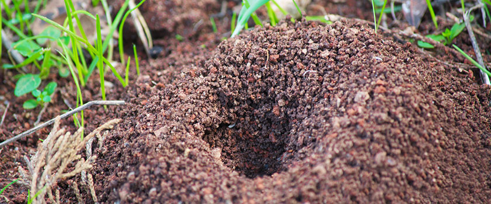

Omgeving waarin de mieren leven
Mieren komen alleen boven de grond om voedsel te zoeken. Sommige soorten komen bijna nooit boven de grond.
Een voorbeeld is de gele weidemier. Die zoeken voedsel onder de grond. Andere soorten maken het nest in een vermolmde boomstam of zelfs in een eikel.
Mieren graven graag hun nest onder een steen. Overdag wordt de steen door de zon verwarmd. Na zonsondergang is de steen nog lang warm.
Ook beschermt de steen tegen de regen. Het nest blijft dus droog. En het is een goede bescherming tegen vijanden.
